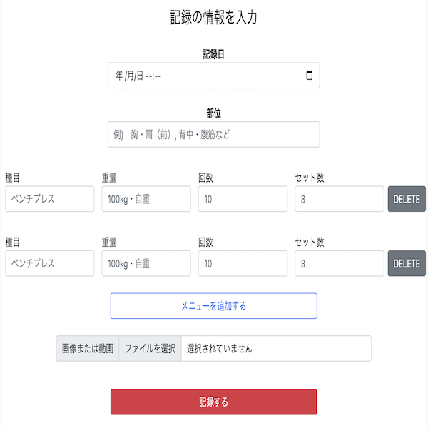
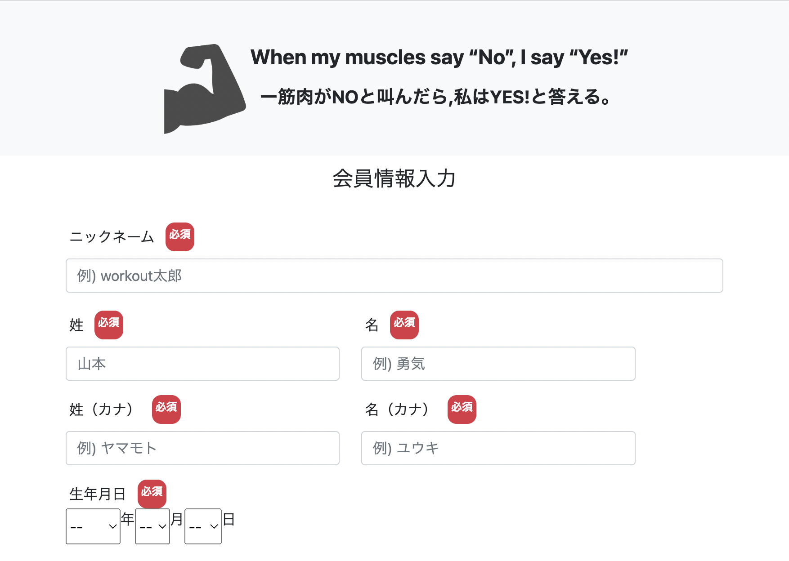

WorkoutDiary（筋トレ共有日記）
開発環境
Ruby / Ruby on Rails / MySQL / GitHub / Heroku / Visual Studio Code
-
概要
制作時間 53時間 URL https://workout-diary-37692.herokuapp.com/ ID wataru PASS 042253 -
動作テスト
テスト用アカウント
mail protein@au.com PASS protein04
OUTLINEアプリケーションの概要
オリジナルアプリケーションとして、自身の筋トレ日記を共有をするSNSを開発しました。
主な機能は、ユーザー登録機能、およびトレーニングの記録機能、頻度カレンダー表示機能、プレビュー機能です。
トップページにアクセスすると、自分や他のユーザーのトレーニング記録が表示されています。それをクリックすると、その記録の詳細が表示され、さらに頻度カレンダーへ遷移するボタンがあります。
ユーザー登録をすると、トレーニング日記を記録することができます。画像や動画を添付することができ、プレビュー機能によりその画像または動画が表示されます。
トレーニングを記録すると頻度カレンダーにも反映され、自分または他のユーザーのトレーニング頻度をカレンダー形式で見ることができます。また、頻度カレンダーにはその日にトレーニングした部位が表示されるので「いつ、どこの部位をトレーニングしたのか」を確認することもできます。
-
開発に至った経緯
自分がトレーニングをしている時はいつもノートにトレーニング内容を記載しており、それを見返す時に「いつ、どこの部位、どんなトレーニングをしたのか」を探すことに手間がかかっていました。
また自分が1ヶ月あたりにどれくらいトレーニングしているのかがわからず、他の人もどんなトレーニングをしているのかを具体的に知りたいときに知ることができないことがありました。
そこで、自分のトレーニングと頻度を客観的に把握し、かつ他の人のトレーニングを見れるアプリを開発しようと考えました。
-
開発で工夫したこと
1つ目がトレーニングの種目・重量・回数・セット数のフォームを手軽に追加・削除できるようにしたことです。これを実現するためにcocoonと呼ばれる外部ライブラリを導入し、入力フォームの増減が可能になりました。
2つ目が頻度カレンダーです。自分や他の人がどれくらいの頻度でトレーニングしているのかカレンダー形式で見えるようにすることでわかりやすいようにしました。
いずれも、知人4名ほどに実際に利用してもらい、ユーザーヒアリングを行いながら改善を行っています。
-
今後実装したいと思っていること
SNSアカウントでログインできるようにすることです。
理由としてはSNSアカウントを持っているユーザーが新規登録をする際に効率よく進めることが可能になるためです。